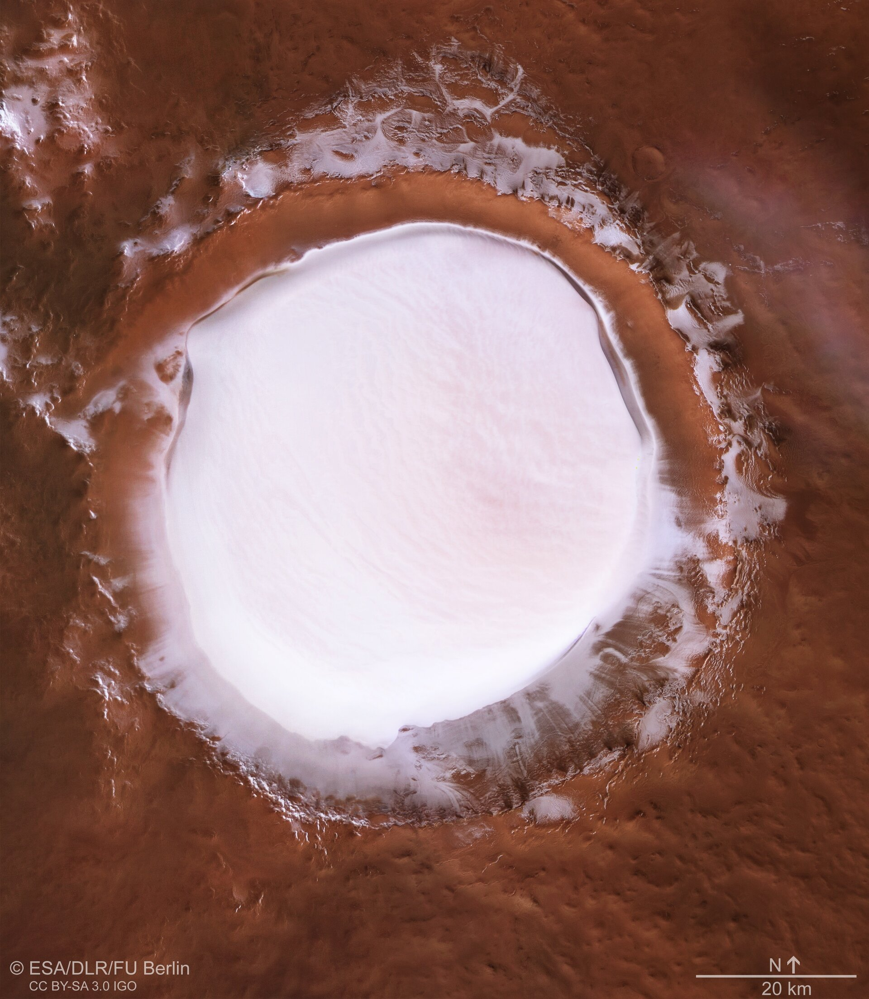

Science & Exploration
Plan view of Korolev crater
This image from ESA’s Mars Express shows Korolev crater, an 82-kilometre-across feature found in the northern lowlands of Mars.
This plan mosaic comprises five different observational strips that have been combined to form a single image, gathered over orbits 18042 (captured on 4 April 2018), 5726, 5692, 5654, and 1412. It covers a region centred at 165° E, 73° N, and has aresolution of approximately 21 metres per pixel.
This image was created using data from the nadir and colour channels of the High Resolution Stereo Camera (HRSC). The nadir channel is aligned perpendicular to the surface of Mars, as if looking straight down at the surface.